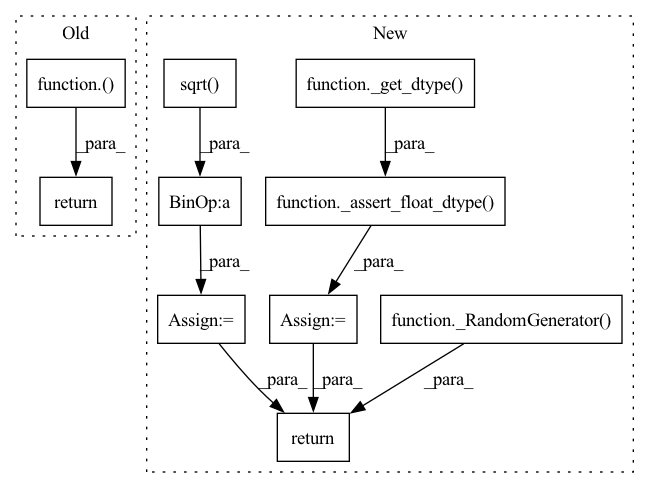

Pattern ID :11120

Before Change
return tf.initializers.glorot_normal(seed)(shape=shape, dtype=dtype_str(dtype))
def xavier_uniform(shape, dtype="float32", seed=None):
After Change
fan_in, fan_out = _compute_fans(shape)
std = gain * math.sqrt(2.0 / float(fan_in + fan_out))
dtype = _assert_float_dtype(_get_dtype(dtype))
return _RandomGenerator(seed).random_normal(shape, 0.0, std, dtype)
def xavier_uniform(shape, gain = 1.0, dtype="float32", seed=None):
In pattern: SUPERPATTERN
Frequency: 3
Non-data size: 10
Instances
Fragment ID: 38185524
Project Name: tensorlayer/tensorlayerx
Commit Name: 0a2012c48052090e95e47b04c50298c0e12a3307
Time: 2022-05-18
Author: jiaronghan@outlook.com
File Name: tensorlayerx/backend/ops/tensorflow_backend.py
M Class Name: AnonimousClass
N Class Name: AnonimousClass
M Method Name: xavier_normal(4)
N Method Name: xavier_normal(3)
M Parent Class:
N Parent Class:
M File Name: tensorlayerx/backend/ops/tensorflow_backend.py
N File Name: tensorlayerx/backend/ops/tensorflow_backend.py
M Start Line: 323
M End Line: 323
N Start Line: 411
N End Line: 438
'>
Before Change
return tf.initializers.glorot_uniform(seed)(shape=shape, dtype=dtype_str(dtype))
def Variable(initial_value, name, trainable=True, device = None):
After Change
fan_in, fan_out = _compute_fans(shape)
std = gain * math.sqrt(2.0 / float(fan_in + fan_out))
bound = math.sqrt(3.0) * std
dtype = _assert_float_dtype(_get_dtype(dtype))
return _RandomGenerator(seed).random_uniform(shape, -bound, bound, dtype)
def Variable(initial_value, name, trainable=True, device = None):
'>
Fragment ID: 38185522
Project Name: tensorlayer/tensorlayerx
Commit Name: 0a2012c48052090e95e47b04c50298c0e12a3307
Time: 2022-05-18
Author: jiaronghan@outlook.com
File Name: tensorlayerx/backend/ops/tensorflow_backend.py
M Class Name: AnonimousClass
N Class Name: AnonimousClass
M Method Name: xavier_uniform(4)
N Method Name: xavier_uniform(3)
M Parent Class:
N Parent Class:
M File Name: tensorlayerx/backend/ops/tensorflow_backend.py
N File Name: tensorlayerx/backend/ops/tensorflow_backend.py
M Start Line: 351
M End Line: 351
N Start Line: 441
N End Line: 469
'>
Before Change
return tf.initializers.he_normal(seed)(shape=shape, dtype=dtype_str(dtype))
def xavier_normal(shape, dtype="float32", seed=None):
After Change
fan_in, fan_out = _compute_fans(shape)
correct_fan = fan_in if mode == "fan_in" else fan_out
gain = calculate_gain(nonlinearity, a)
std = gain / math.sqrt(correct_fan)
dtype = _assert_float_dtype(_get_dtype(dtype))
return _RandomGenerator(seed).random_normal(shape, 0.0, std, dtype)
def he_uniform(shape, a = 0, mode = "fan_in", nonlinearity="leaky_relu",dtype="float32", seed=None):
'>
Fragment ID: 38185520
Project Name: tensorlayer/tensorlayerx
Commit Name: 0a2012c48052090e95e47b04c50298c0e12a3307
Time: 2022-05-18
Author: jiaronghan@outlook.com
File Name: tensorlayerx/backend/ops/tensorflow_backend.py
M Class Name: AnonimousClass
N Class Name: AnonimousClass
M Method Name: he_normal(6)
N Method Name: he_normal(3)
M Parent Class:
N Parent Class:
M File Name: tensorlayerx/backend/ops/tensorflow_backend.py
N File Name: tensorlayerx/backend/ops/tensorflow_backend.py
M Start Line: 270
M End Line: 295
N Start Line: 356
N End Line: 385